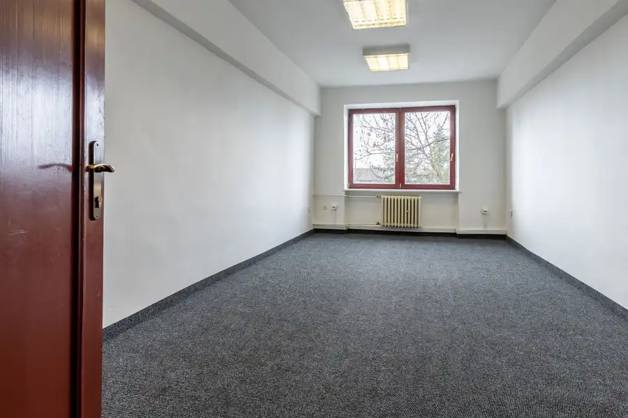
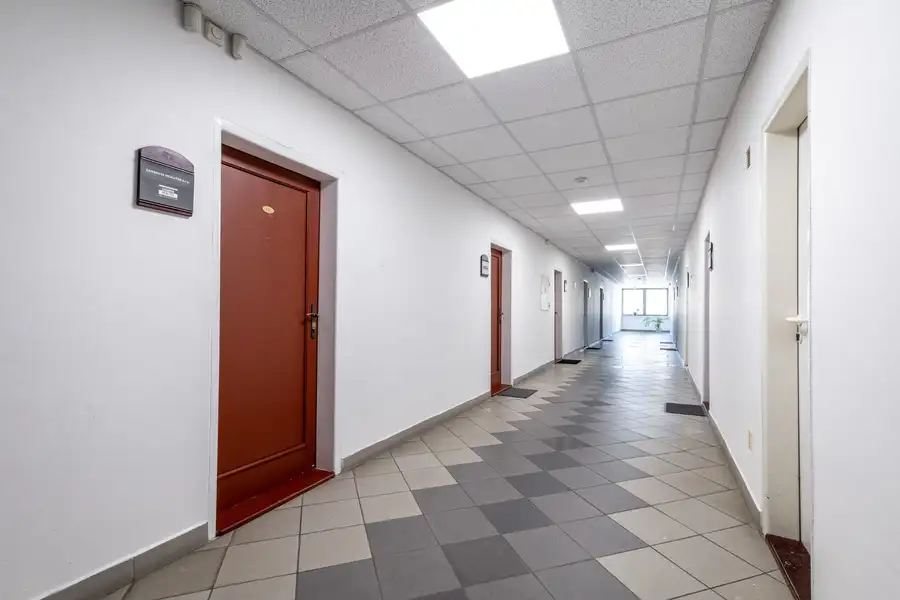
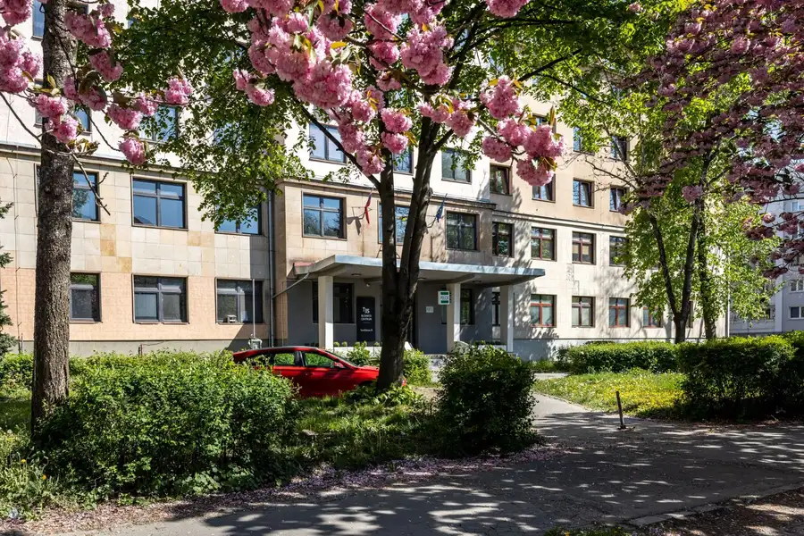

Prenájom kancelárie BC TOMÁŠIKOVA - 20 m2, 236 € vrátane energií + DPH
mestská časť Sever, Košice
- Dispozícia1-izbový
- Plocha20 m²
- Poschodie4. z 5
- Stavčiastočne prerobený
- Vlastníctvoosobné
O nehnuteľnosti
Táto lokalita je obľúbená nielen firmami z oblasti bankovníctva, práv či IT, ale aj stavebníctva či služieb. Ide o flexibilné pracovné priestory pre všetky typy firiem a projektov.
Ponúkame vám na prenájom kanceláriu č. 435 s rozlohou 20 m2. Budova pozostáva z piatich poschodí a daná kancelária sa nachádza na 4. poschodí. Budova má vlastného správcu, výťah, uzavreté kancelárie, spoločné kuchynky a sociálne zariadenia a ponúka vám maximálnu flexibilitu pre Vaše podnikanie.
Poloha objektu Vám a Vašim zamestnancom poskytne plný komfort z pohľadu dopravy, nákupov či služieb. Lokalita poskytuje výborné napojenie na mestské aj diaľničné dopravné uzly a skvelú dostupnosť s MHD. Hneď vedľa budovy sa nachádza zastávka MHD, čo robí toto miesto veľmi frekventovaným.
Cena za prenájom je 236€ bez DPH, vrátane všetkých energií a poplatkov.
V blízkosti sa nachádza OD Beta s potravinami, reštaurácie, Family Gym Oáza, banka.
Štandard priestorov:
- prístup do budovy 24/7
- otvárateľné okná
- výťah
- štruktúrovaná kabeláž
- kuchynky
- sociálne zariadenia
- klimatizácia
Kancelária je čerstvo vymaľovaná a má nový koberec.. V blízkej budúcnosti sa plánuje rekonštrukcia vstupnej haly. Pracovať v administratívnej budove Tomášikova znamená pracovať v bezprostrednej blízkosti centra Košíc a využívať komfort, ktorý poskytuje funkčné prevedenie celej budovy.
Ak vás táto ponuka zaujala, neváhajte ma kontaktovať: Silvia Tomčová - Certifikovaný realitný maklér NARKS.
Parametre
| Celková rozloha | 20 m² |
|---|---|
| Úžitková plocha | 20 m² |
| Poschodie | 4/vyššie poschodie |
| Počet poschodí | 5 |
| Počet izieb | 1 |
| Vlastníctvo | osobné |
| Stav | čiastočne prerobený |
| Internet | optika |
| Výťah | áno |
| Parkovanie | verejné |
| Postavené z | panel |
| Klimatizácia | áno |
| Okná | drevené |
| Dátum zverejnenia | 26. 2. 2026 |
Kde to je
Mohlo by Vás zaujímať

Nebytové priestory5 Cena dohodouBC TOMÁŠIKOVA 35 - kancelária - 25 m2, 294 € vrátane energií mestská časť Sever, Košice 1-izbový25 m²5. podlažie SILVIA TOMČOVÁ z CASSOVIA REALITAS vám ponúka na prenájom kancelársky priestor v administratívnej budove na rohu ulice Tomášikova a Národná trieda.…
Nebytové priestory7 Cena dohodouBC TOMÁŠIKOVA - kancelária na prenájom, 20 m2, 236 € bez DPH mestská časť Sever, Košice 1-izbový20 m²2. podlažie Táto lokalita je obľúbená nie len medzi firmami z oblasti bankovníctva, práv či IT, ale aj stavebníctva či služieb. Ide o flexibilné pracovné…
Nebytové priestory8 Cena dohodouPrenájom kancelárie BC Tomášikova - 59 m2/626 €, vrátane energií + DPH mestská časť Sever, Košice 1-izbový59 m²4. podlažie Táto lokalita je obľúbená nie len medzi firmami z oblasti bankovníctva, práv či IT, ale aj stavebníctva či služieb. Ide o flexibilné pracovné…